How to walk a restaurateur through this deck. Read the orange “Pitch it” note at the foot of each page out loud, then let the screenshots do the talking.
“Your menu is your best salesperson, but a paper menu can’t sell, can’t upsell, and can’t tell you what’s working. Relish turns it into a cinematic, AI-guided menu your guests order and pay from — and gives you a kitchen display, inventory and live numbers behind it. One build, not a forever subscription.”
“When a guest sits down today — how do they decide what to order, and how do you know later what actually sold?” Let them answer; every Relish feature is a reply to that gap.
| “We already have a QR menu.” | Theirs is a PDF. Ask if it has search, dietary filters, AI recommendations, pay-at-table or a kitchen display. It doesn’t — Relish does, and it’s yours to keep. |
| “POS is too expensive / monthly.” | That’s the point — Relish is a one-time build with a light renewal. Cheaper than SaaS inside 18 months, with a richer guest layer. |
| “Will my staff learn it?” | Each role gets one screen scoped to their job. Show the waiter “My Tables → Take order → split & settle.” Done. |
| “We’re not technical.” | Guests install nothing. You send us the menu; we theme it, generate the media, hand you printable QR codes. Live in days. |
▶ Close with
“Want to see it on your menu? Give me your top ten dishes and I’ll have a live demo for you this week.”
Cheap QR menus look fine but do nothing. Big POS suites do plenty but look like 2009 and bill you monthly forever. Relish gives you both — a cinematic, AI-guided, pay-from-your-phone menu and a real back office — for a one-time price.
Adaptive video, seven themes, in-menu search, dietary filters and an AI “what should I order?” flow that builds money-saving combos.
Guests split the bill any way, tip, and pay by UPI/card from their phone — then leave you a Google review on the way out.
Kitchen display, live tables, inventory that deducts itself and 86s a dish when stock runs out, promotions and reservations.
Revenue, best-sellers, peak hours, staff performance, GST reports — and a multi-outlet rollup if you run more than one.
▶ Pitch it
“You don’t have to choose between pretty and powerful — Relish is both, for one price.”
Key insight: the whole category is split into cheap-but-thin and powerful-but-ugly. Relish is the only one that does both at the QR-menu entry price.
Scan → browse → order → split & pay → review & earn points. No app.
My tables, take orders, claim requests, merge/transfer, settle split bills.
Floor, kitchen display, menu & inventory, promotions, reservations, reports.
Dashboard, staff & permissions, roster, multi-outlet, billing, loyalty.
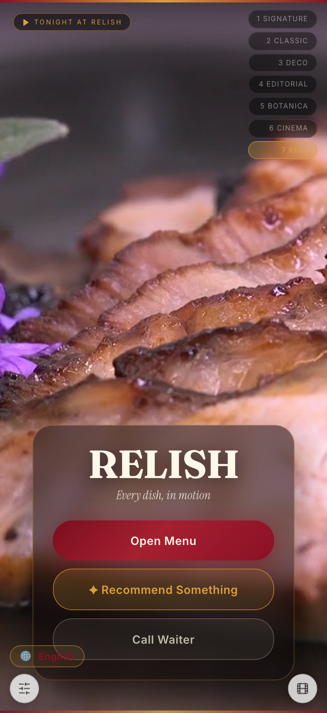
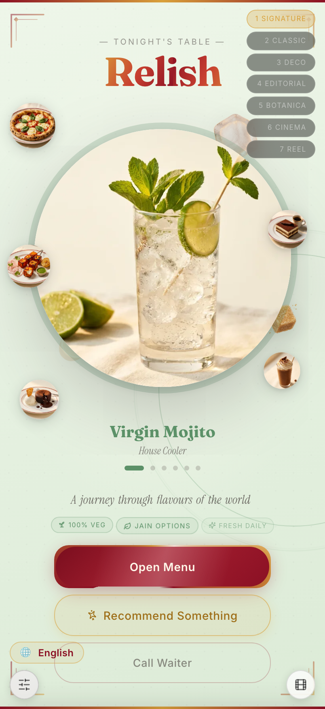
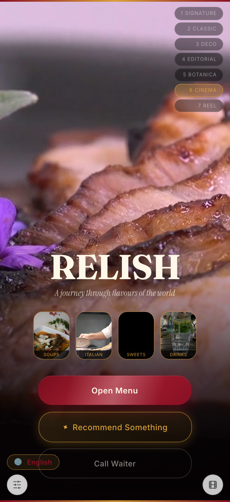
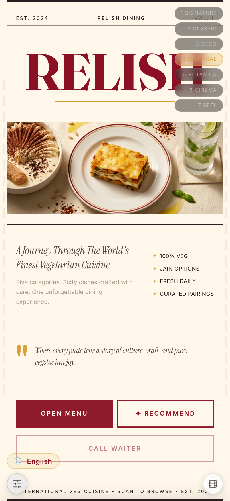
▶ Pitch it
“One platform, but everyone — guest, waiter, manager, you — gets exactly the screen they need.”
Key insight: the guest installs nothing and the staff aren’t drowned in features they don’t use. Role-scoped = faster adoption.
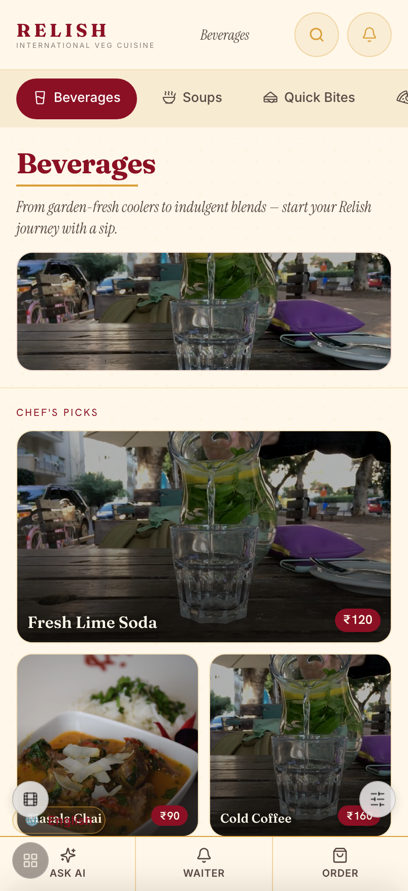
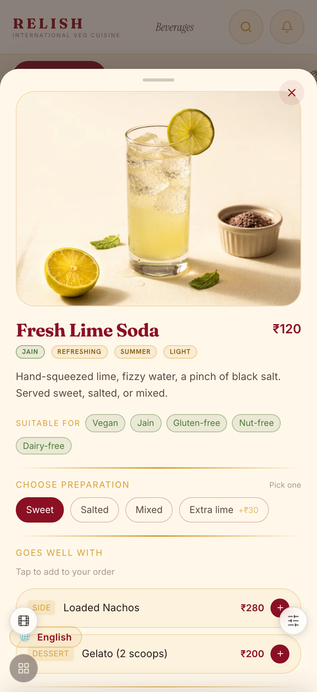
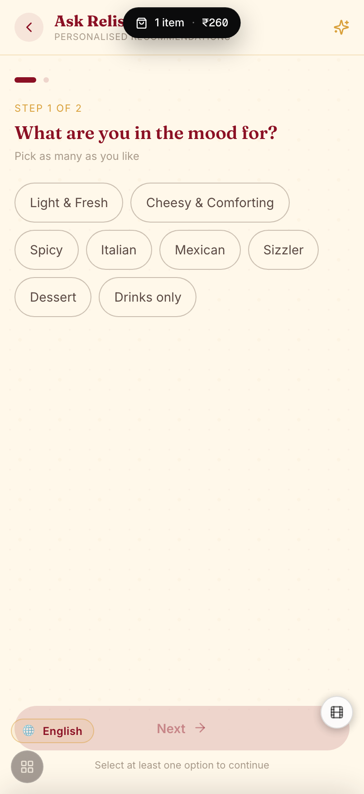
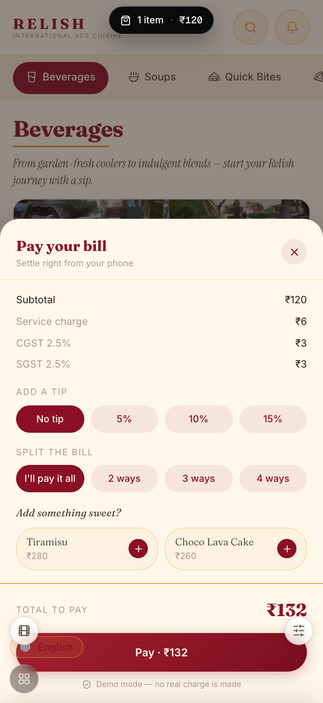
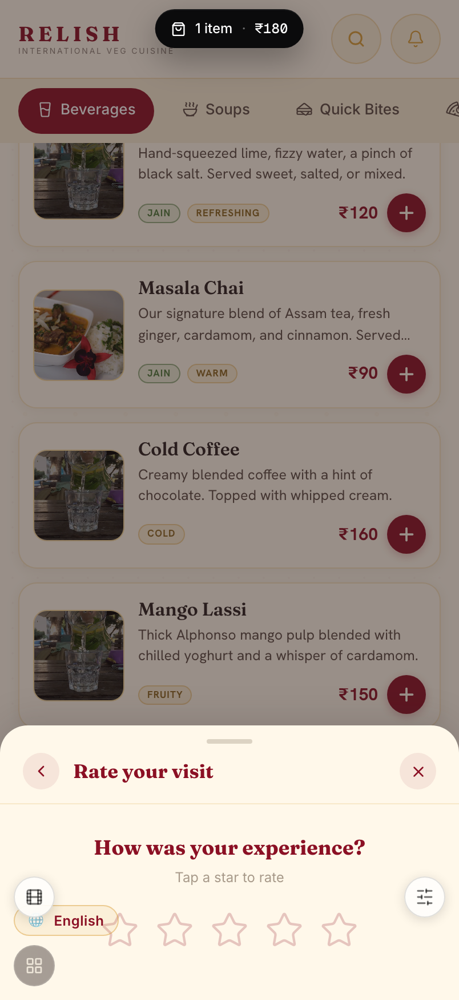
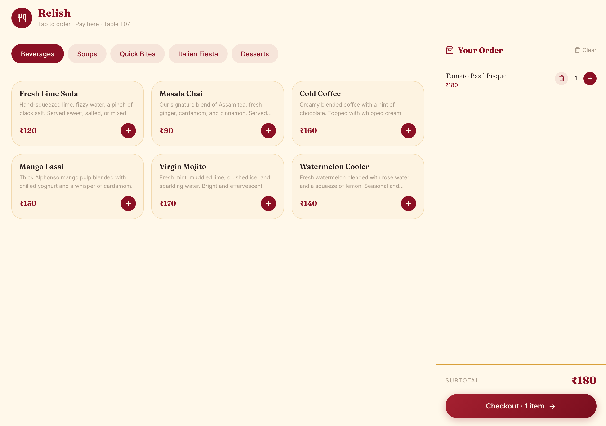
▶ Pitch it
“Every step here is a chance to sell more and collect a review — without adding a single staff task.”
Key insight: the AI flow lifts average order value, pay-at-table turns tables faster, and the post-pay screen turns happy guests into Google reviews automatically.
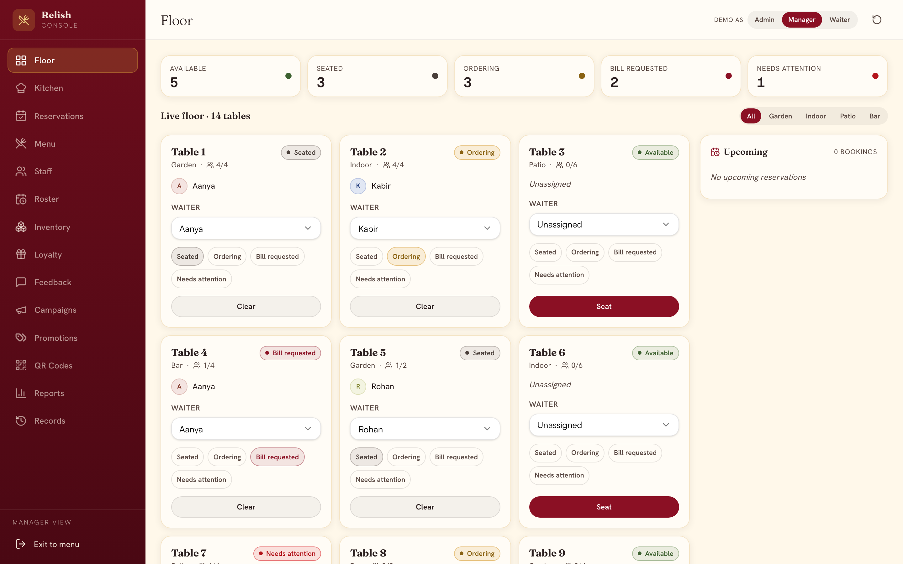
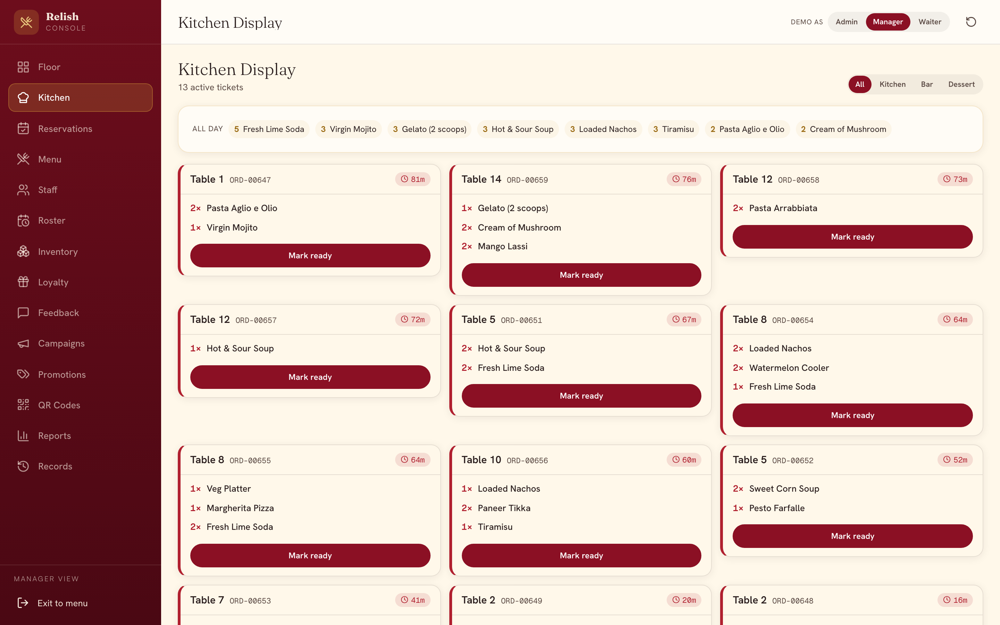
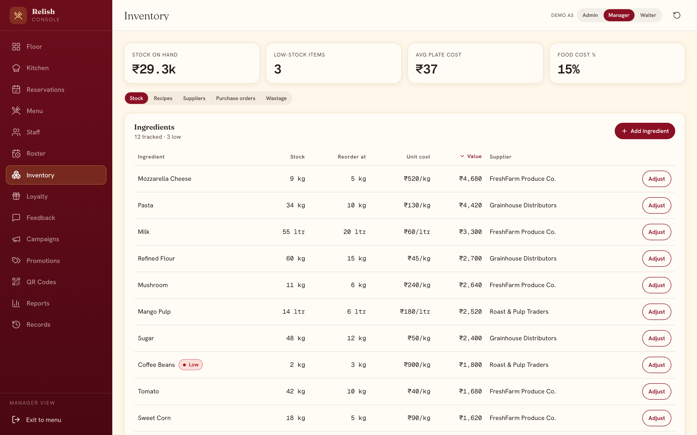
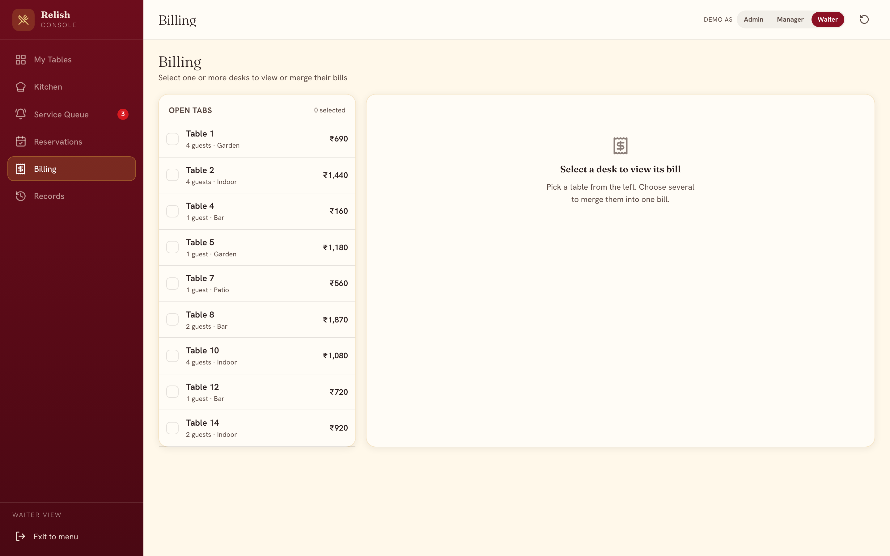
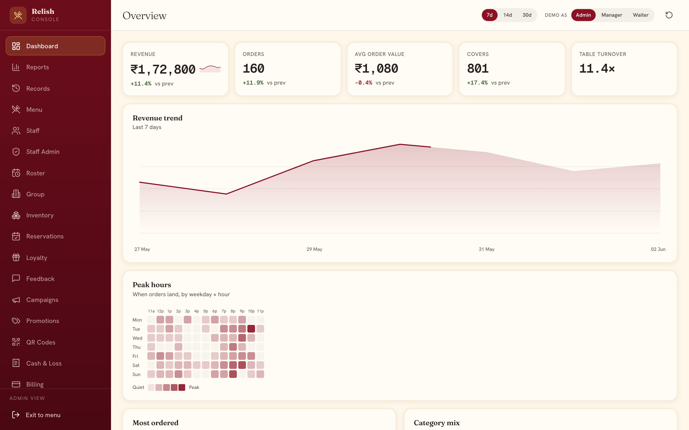
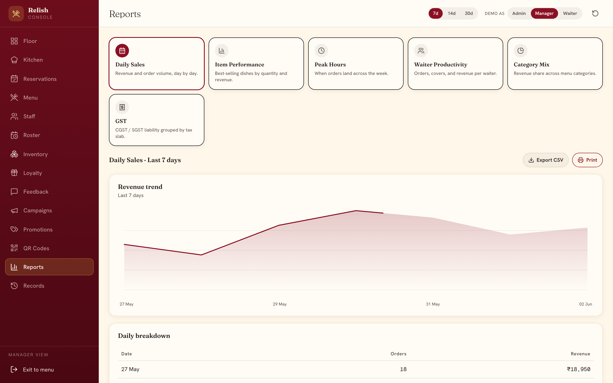
▶ Pitch it
“This is the part a QR menu never gives you — the operations and the numbers to run on.”
Key insight: inventory that auto-86s a sold-out dish, and a dashboard that tells you your best-seller and peak hour, is POS-grade depth most QR tools simply don’t have.
| What you get | Relish | QR-menu apps | Full POS suites |
|---|---|---|---|
| One-time price (no forced monthly) | ● | ○ | ○ |
| Cinematic video menu + themes | ● | ○ | ○ |
| In-menu search + dietary filters | ● | ○ | ● |
| AI recommendations + combos | ● | ○ | ○ |
| Pay-at-table, split & tip | ● | ● | ● |
| Kitchen display + live floor | ● | ○ | ● |
| Inventory with auto-86 + food cost | ● | ○ | ● |
| Loyalty, promotions, reservations | ● | ○ | ● |
| Multi-outlet rollup + GST reports | ● | ○ | ● |
| Kiosk self-order mode | ● | ○ | ● |
The short version: Relish starts where a QR menu starts — beautiful and cheap to launch — but carries the operations a full POS gives you. You get the guest experience the big suites don’t, without the monthly bill.
▶ Pitch it
“Anything the cheap apps do, we do. Anything the big POS does, we mostly do. And the cinematic guest experience? Only us.”
Key insight: point at the orange column — it’s the only one filled top to bottom. The dots do the arguing for you.
| Package | One-time build | Annual renewal | Best for |
|---|---|---|---|
| Web Menu | ₹14,999 | ₹2,999 | A beautiful digital menu |
| Classic | ₹24,999 | ₹2,999 | Menu + ordering + service |
| Cinematic Most popular | ₹54,999 | ₹4,999 | Video, AI flow, full console |
| Signature | ₹89,999 | ₹4,999 | Everything + bespoke theme |
Prices exclusive of GST (5% at billing). Bring-your-own-media discounts available.
A per-month QR SaaS at ₹3,000–₹10,000/mo is ₹36k–₹120k every year. Relish Cinematic is ₹54,999 once, then ₹4,999/yr — and your guest experience is richer. One avoided menu-reprint cycle roughly pays for the build.
▶ Pitch it
“You’re not renting software forever — you own it, and renewal is the price of a nice dinner for two.”
Key insight: anchor on Cinematic (the ⭐ row). Frame renewal (₹4,999/yr) against the SaaS annual bill they’d otherwise pay every year.
Choose a tier and a theme. Send us your menu and brand.
We load your menu, generate the cinematic media, and wire GST + payments.
Per-table codes, print-ready from the console.
Guests scan and order; your team runs the floor from day one.
Book a 20-minute live walkthrough — guest app, kitchen display and the full console.
hello@theshahstack.com relish-qr-menu-nine.vercel.app